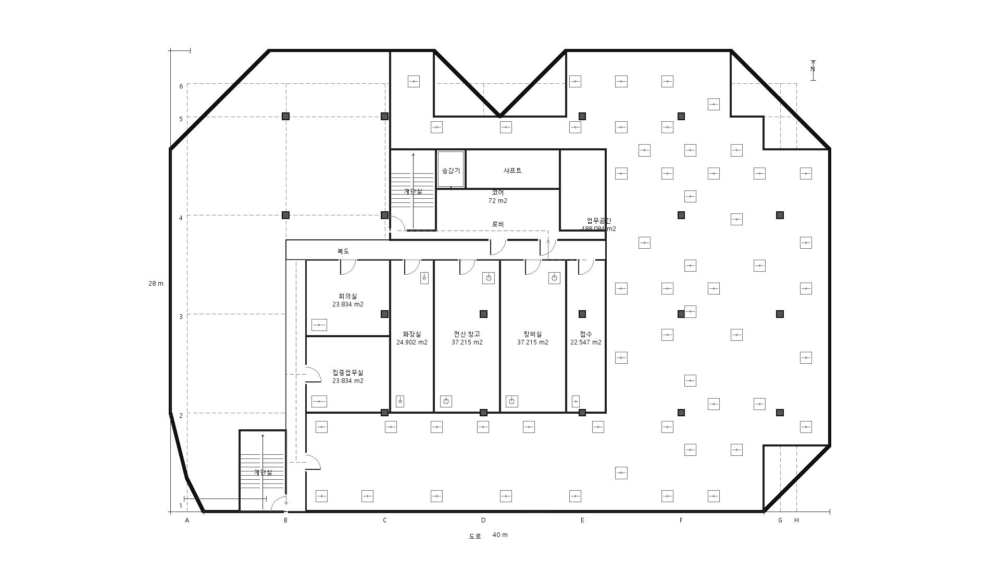
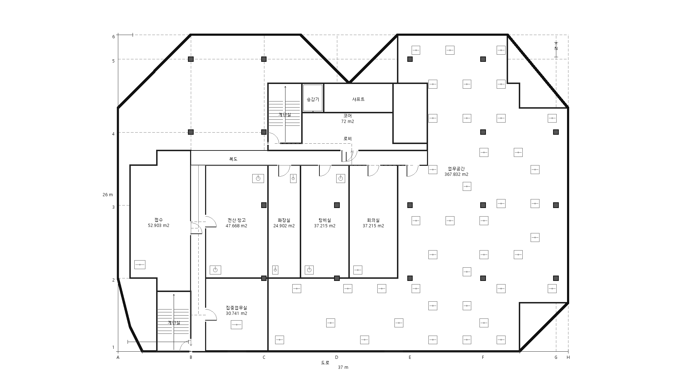
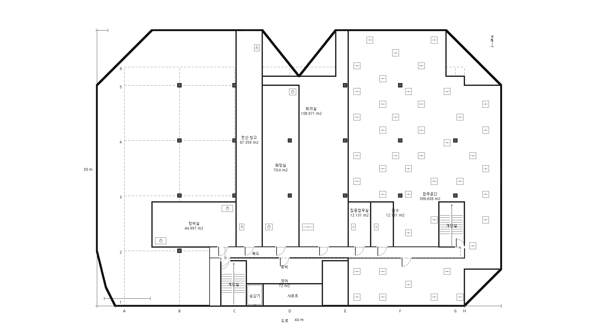
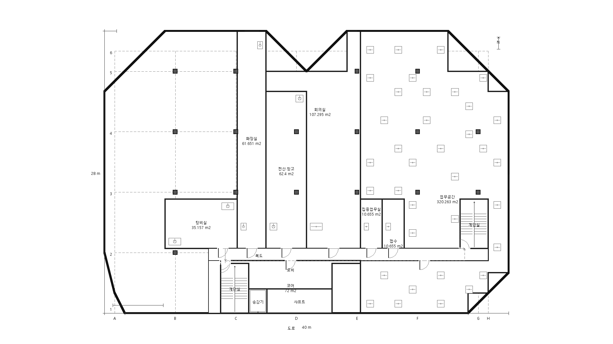
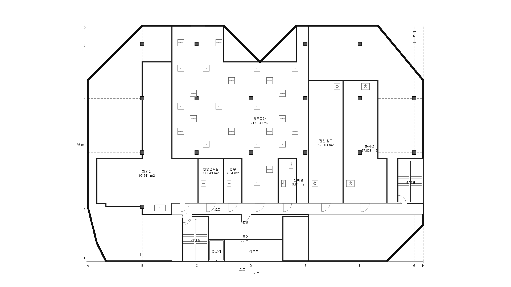

Irregular Mass Structural Alternatives
2 accepted / 2 distinct structural, core, circulation, and PNG fingerprints
1920 x 1080 architectural review renders
Alternative 01 - notch adjacent
QUALITY PASS
Coverage 0.7563 / 0.7311 / 0.7913
Open-work share 0.7006 / 0.7422 / 0.6146
Label collisions 0 / 0 / 0
 Floor 1 · SHA-256
Floor 1 · SHA-256 cb14068aa65b...

Floor 2 · SHA-256 77c4f118e0ff...

Floor 3 · SHA-256 1763b4747d7c...
Alternative 02 - long-edge adjacent
QUALITY PASS
Coverage 0.6596 / 0.6821 / 0.6278
Open-work share 0.5558 / 0.5267 / 0.4744
Label collisions 0 / 0 / 0

Floor 1 · SHA-256 d127a2af17ce...

Floor 2 · SHA-256 d5fc45679abb...

Floor 3 · SHA-256 ff64327a8a84...